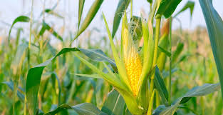
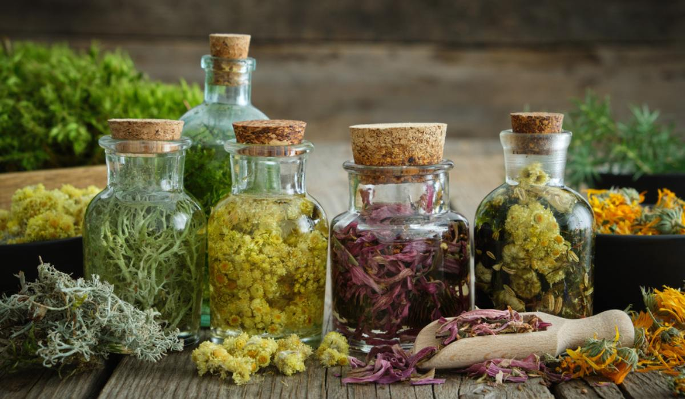

Welcome to Agriculture Field
Home
About Us
Contact
FARMING
Content farming is the practice of generating large amounts of low-quality content to rank highly in search engines and earn money from ads. Content farms are also known as content mills.
View details »

CROPS
Crops are plants grown for food, fiber, or other uses. They can be classified by their type, season.
View details »

MEDICINES
Some representative placeholder content for the three columns of text below the carousel. This is the first column.
View details »
© 2025 Agriculture Field. Developed by vs.